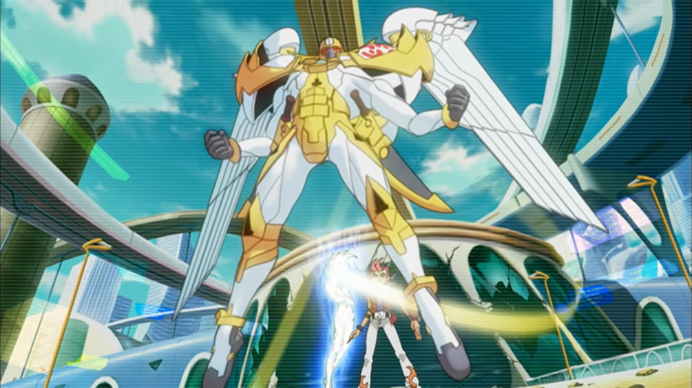

Utopia first being summoned
Number 39: Utopia
The very first card to come from this architype, he was first showed in the first episode of Yu-Gi-Oh! Zexal on April 11th, 2011.Utopia is meant to be a great offense monster while also defending his team and himself via his overlay units effect. Be warned that once he runs out of overlay units he will self-distruct.
He's THE monster that shows up frequently in the story. This is because he's the debut monster that starts this archtype. He’s also represents the starting point of the two protagonists (Yuma and Astral) character development!
Utopia's design is both angelic based and warrior based, which is proven by his golden armor, his giant wings, and his two swords. It feels like a tech evolutions of archangels. He's meant to be a symbol of goodness and order.
His emblem in the middle resembles the top of Yuma's key (necklace).
"Come forth! Numbers 39! Aspiring Emperor-Hope!!!"
-Yuma and Astral's Japanese summoning chant for Number 39: Utopia